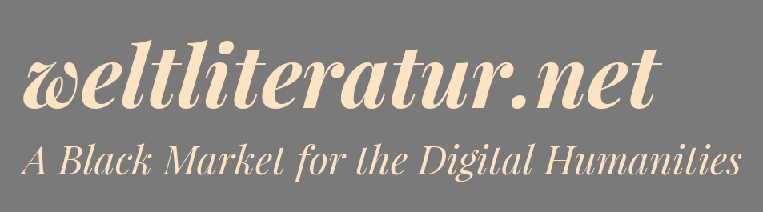

<!doctype html>
<html lang="de">
	<head>
		<meta charset="utf-8">
		<meta name="viewport" content="width=1920, height=1200, initial-scale=1.0, maximum-scale=1.5, user-scalable=no">

		<title>Datenschätze selber heben: Data Science und Bibliotheken</title>

		<link rel="stylesheet" href="../reveal.js/css/reveal.css">
		<link rel="stylesheet" href="../reveal.js/css/theme/simple.css">

        <!-- adjustments for serif.css -->
        <link rel="stylesheet" href="custom.css">

		<!-- Theme used for syntax highlighting of code -->
		<link rel="stylesheet" href="../reveal.js/lib/css/zenburn.css">

		<!-- Printing and PDF exports -->
		<script>
			var link = document.createElement( 'link' );
			link.rel = 'stylesheet';
			link.type = 'text/css';
			link.href = window.location.search.match( /print-pdf/gi ) ? '../reveal.js/css/print/pdf.css' : '../reveal.js/css/print/paper.css';
			document.getElementsByTagName( 'head' )[0].appendChild( link );
		</script>
	</head>
	<body>
		<div class="reveal">
			<div class="slides">
			    <section data-markdown="" data-separator="^\n---\n" data-separator-vertical="^\n--\n" data-charset="utf-8">
<script type="text/template">


# Datenschätze selber heben<!-- .element: style="font-size:3em;" -->

## Data Science und Bibliotheken

<br />[Robert Jäschke](https://amor.cms.hu-berlin.de/~jaeschkr/)

<br />Humboldt-Universität zu Berlin & Forschungszentrum L3S, Hannover<!-- .element: style="font-size:0.75em;" -->

<br />25. Februar 2020


<br/><p style="font-size:0.75em;">
<a rel="license"
href="http://creativecommons.org/licenses/by/4.0/"></a> <br/>
Dieses Werk ist lizenziert unter einer <a rel="license" href="http://creativecommons.org/licenses/by/4.0/">Creative Commons Namensnennung 4.0 International Lizenz</a>.
</p>

--

<!--

## Agenda

<br />
1. [Einleitung](#/1)
2. [Beispiel 1](#/2): Bibliothekskatalog
3. [Beispiel 2](#/3): soziale Medien
4. [Diskussion](#/4)

--> 

---

# Einleitung

--


<small>
Quelle: [XKCD, Randall Munroe](https://xkcd.com/435) / CC BY-NC 2.5
</small>


--

<!-- ## Information Processing and Analytics -->

<!-- .element: style="margin-top: -20px;" -->

--

## Institut für Bibliotheks- und Informationswissenschaft (IBI)

- Humboldt-Universität zu Berlin
- einziges universitäres Institut dieser Art in Deutschland
- ≅ 570 Studierende (300 BA, 100 MA, 150 MA Fernstudium, 20 PhD)

<!-- .element width="600px" -->


--

## Ein Leben nach dem IBI

*Welche Fähigkeiten und Kompetenzen haben Ihren beruflichen Werdegang
positiv beeinflusst?*

<!-- .element width="800px" -->

<!-- Welche Inhalte wurden zu wenig oder gar nicht behandelt? -->

*Welche Fähigkeiten und Kompetenzen hätten Sie gern in Ihren Beruf
mitgebracht?* <br/>→ IT (Coding, XML, MySQL, Skripting,
Programmierkenntnisse, Web-Design, Python, Data Science, …)

<small>
Quelle: [Verbleibstudie des IBI
2011-2016](https://www.ibi.hu-berlin.de/de/bbk/abstracts/ss18/verbleibstudie), Silke
Backhaus und Tanya Lackner, 2018
</small>

--

## "Data Science"?

Einerseits
- sind solche Fähigkeiten der Karriere dienlich 
- *making sense of data* is becoming more and more important

Andererseits
- gibt es Daten im Überfluss an Bibliotheken (und anderswo) 
- aber oft fehlt (noch) das Know How, diese zu nutzen

<br/>

*Wir bilden die nächste Generation "Information **and Data** Professionals" aus.*

**Wie kann Data Science Bibliotheken helfen, <br/> ihre (eigenen)
Daten besser zu verstehen und <br/> neue Dienste bereitzustellen?**

--

## relevante Lehrveranstaltungen am IBI

### Bachelor
- Informations- und Kommunikationstechnologie
- Information Storage and Processing

<br/>
### Master
- Knowledge Discovery in Databases
- Web Science
- Datenanalyse & -auswertung

<br/>
### Freiwillig (Bachelor und Master)
- regelmäßige "Programmierspaß"-Treffen
- LISMakerLab


--


**Wie kann Data Science Bibliotheken helfen, <br/> ihre (eigenen)
Daten besser zu verstehen und <br/> neue Dienste bereitzustellen?**


## Drei Beispiele


Bibliothekskatalog<br/>
<!-- .element height="200px" -->

<!-- .element style="float:left" -->


Soziale Medien<br/>
<!-- .element height="200px" -->

<!-- .element style="float:left" -->


Zeitungskorpus<br/>
<!-- .element height="200px" -->

<!-- .element style="float:left" -->


---

# Beispiel 1:<br/> Framework zur Exploration und Analyse des DNB-Katalogs

<br/>
zusammen mit [Frank
Fischer](https://www.hse.ru/en/org/persons/182492735)<br/>

Higher School of Economics, Moskau<!-- .element: style="font-size:0.75em;" -->

<br/>
gesamter Vortrag: [Liebe und Tod in der Deutschen
Nationalbibliothek](https://lehkost.github.io/slides/2018-koeln/)<br/> DHd
Köln, 1. März 2018

--

## Ziele und Ausgangslage

- Nutzbarmachung von Katalogmetadaten zur Bearbeitung konkreter
  literaturwissenschaftlicher Forschungsfragen
- einfaches Framework, um verschiedene Aspekte des DNB-Katalogs zu
  untersuchen
- Datendienst der DNB: http://www.dnb.de/datendienst – dritteljährlicher Komplettabzug der Katalogdaten im RDF-Format (CC0-Lizenz 😊)
- »Titeldaten der DNB«: 14 102 309 Datensätze und 227 212 707 Tripel (»Fakten«)
- **~ 180 000** Romane (laut [»rdau:P60493«](http://www.rdaregistry.info/Elements/u/#P60493), Label: »has other title information«)
- Angabe zu Autor&#42;innen durch die numerische GND-Kennung ermöglicht Verknüpfung der Daten mit u.a. Wikidata
  ```xml
	<dcterms:creator rdf:resource="http://d-nb.info/gnd/118540238"/>
  ```

--

## Framework

<!-- .element width="1040px" -->

alle Schritte im
[GitHub-Repository](https://github.com/weltliteratur/dnb) dokumentiert


--

## Subdatensätze

<!-- .element width="640px" -->

--

## Häufigste Substantive in Romantiteln

<br />

| Substantiv | Frequenz |
|:--|--:|
| Liebe | 3 117 |
| Mann | 1 906 |
| Frau | 1 686 |
| Tod | 1 537 |
| Nacht | 1 505 |
| Leben | 1 496 |
| Welt | 1 188 |
| Haus | 1 158 |
| Zeit | 1 037 |
| Schatten | 1 029 |

<br />
<small>Häufigste Substantive in Romantiteln im gesamten DNB-Katalog.</small>

--

## Häufigste Trigramme in Titeln

<br />

| Trigramm | Frequenz |
|:--|--:|
| Das Geheimnis der | 238
| Das Haus der | 224
| Der Mann der | 189
| Das Geheimnis des | 175
| Die Tochter des | 160
| Im Schatten des | 128
| Der Mann im | 128
| Das Lied der | 125
| Die Frau des | 124
| Die Reise nach | 108

<br />
<small>Häufigste Trigramme in Romantiteln im DNB-Katalog.</small>

--

## Romanumfänge

<!-- .element width="640px" -->

<small>Anzahl der Bücher pro Seitenanzahl im Umfangsbereich 200 bis 400 Seiten.
<br/><br/>
**Publikumsfrage:** Es gibt einen Peak aller 16 Seiten, weil …</small>

--

## Entwicklung des Romanumfangs seit 1913

<!-- .element width="640px" -->

<small>Entwicklung der mittleren Seitenanzahl pro Jahr seit 1913. – Scheint eine Vermutung von Helge Malchow zu bestätigen: »Mit dem Einzug des Computers in den Schreibprozess sind die Romane nach meinem Eindruck im Durchschnitt um zehn Prozent länger geworden.« ([*Die Zeit* 47/2012](http://www.zeit.de/2012/47/Buecher-Internet-Literatur-Verleger/komplettansicht))</small>

--

## Lessons learned

- Bibliothekskataloge sind interessant und können sogar einige Überaschungen enthalten 
- einfache Kommandozeilenwerkzeuge und Programmierkenntnisse in Python reichen
- reichhaltige Ergebnisse basierend auf einer nur sehr kleinen Auswahl an Metadatenfeldern
- **Bibliotheken**: Ausgangspunkt für die interaktive Exploration des Katalogs


---

# Beispiel 2:<br/> Forschende auf Twitter

<br/>

zusammen mit [Marco
Schmitt](http://www.soziologie.rwth-aachen.de/cms/Soziologie/Die-Organisationseinheit/Lehr-und-Forschungseinheiten/Technik-und-Organisation/~noaz/Dr-Marco-Schmitt/)<br/>

RWTH Aachen<!-- .element: style="font-size:0.75em;" -->

<br/>

DOI:[10.1371/journal.pone.0179630](http://dx.doi.org/10.1371%2fjournal.pone.0179630)

--

## Ziele und Ausgangslage

<!-- .element height="450px" -->

<small>https://www.altmetric.com/details/1053708</small>

--

## Ziele und Ausgangslage


<!-- .element height="450px" -->
<!-- .element height="450px" -->

<small>https://www.altmetric.com/details/1053708<br/>
https://www.improbable.com/ig/2012/</small>


--

## Ziele und Ausgangslage

### im Kontext Altmetrics

- Was finden *Forschende* spannend und wie können wir das entdecken?
- spezifisches Tweet-Verhalten für Wissenschaftler&#42;innen, speziell Informatik?
- auch: Wem folgen? jungen Forschenden Orientierung bieten

<br/>

### Daten

- [Twitter-API](https://developer.twitter.com/en/docs.html) frei verfügbar: 1% Zufallsstichprobe + Nutzerdaten
- [Microsoft Academic
  Graph](https://www.microsoft.com/en-us/research/project/microsoft-academic-graph/):
  Metadaten zu Publikationen, Forschenden, Zeitschriften, etc.
- Vorarbeit
  DOI:[10.1145/2615569.2615676](https://dx.doi.org/10.1145/2615569.2615676):
  Tweets von Informatiker*innen

--

## Framework

<!-- .element width="1040px" -->

|Anzahl an …|Informatik|Zufallsstichprobe|
|:--|--:|--:|
|Nutzer&#42;innen|6 694|117 907 194|
|Tweets|2 259 756|1 605 361 179|
|Tweets mit Link |957 480|300 053 850|
|Links|762 918|168 881 714|


--

## Häufige Domänen

| |Informatik||Zufallsstichprobe| |
|--:|:--|--:|:--|--:|
|1|youtube.com|60%|instagram.com|16%|
|2|google.com|38%|youtube.com|14%|
|3|twitter.com|35%|facebook.com|10%|
|4|wordpress.com|31%|vine.co|10%|
|5|facebook.com|31%|twitter.com|6%|
|6|nytimes.com|31%|ask.fm|3%|
|7|github.com|27%|unfollowers.com|2%|
|8|wired.com|26%|uapp.ly|2%|
|9|theguardian.com|26%|path.com|2%|
|10|tumblr.com|26%|edu.sa|1%|
<!--
|11|instagram.com|1 527|24%|fllwrs.com|613 842|1%|
|12|medium.com|1 486|24%|moi.st|608 207|1%|
|13|slideshare.net|1 407|22%|twitpic.com|558 392|1%|
|14|techcrunch.com|1 365|22%|soundcloud.com|505 597|1%|
|15|blogspot.com|1 358|22%|twcm.me|486 662|1%|
|16|vimeo.com|1 342|21%|tumblr.com|485 911|1%|
|17|wikipedia.org|1 326|21%|swarmapp.com|409 063|1%|
|18|wsj.com|1 147|18%|po.st|406 380|1%|
|19|washingtonpost.com|1 126|18%|blogspot.com|403 017|1%|
|20|github.io|1 104|18%|justunfollow.com|399 428|1%|
-->


<br/>

Anteil der Nutzer&#42;innen, die Links zur jeweiligen Domäne getweetet haben<!-- .element: style="font-size:0.75em;" -->

--

## Häufige "Verlags"-Domänen

| |Domäne|Odds Ratio|
|--:|:--|--:|
|1|ceur-ws.org|156 199|
|2|aaai.org|71 015|
|3|nott.ac.uk|65 657|
|4|umontreal.ca|56 202|
|5|umd.edu|53 475|
|6|vldb.org|47 775|
|7|computer.org|44 520|
|8|arizona.edu|42 967|
|9|acm.org|40 306|
|10|aclweb.org|40 221|

<!-- .element: style="float: left;" -->

| |Domäne|Odds Ratio|
|--:|:--|--:|
|11|gla.ac.uk|35 831|
|12|ucsb.edu|35 439|
|13|utah.edu|35 072|
|14|toronto.edu|35 061|
|15|cmu.edu|32 943|
|16|tue.nl|31 550|
|17|soton.ac.uk|30 688|
|18|cornell.edu|30 148|
|19|ucdavis.edu|29 203|
|20|sigcomm.org|28 601|

<br/>

Odds Ratio zwischen dem Anteil der Nutzer&#42;innen im Informatik-Datensatz
und denen in der Zufallsstichprobe, <br/>die Links zur jeweiligen Domäne
getweetet haben<!-- .element: style="font-size:0.75em;" -->

--

## Top Publikationen

<!-- .element width="1040px" -->


Häufig in Tweets verlinkte Publikationen im Informatik-Datensatz,<br/>
sortiert nach dem Odds Ratio der Nutzer&#42;innen-Anteile<!-- .element: style="font-size:0.75em;" -->

--

## Lessons learned

- frei verfügbare Daten gibt es im Überfluss
- Einsichten in Verhalten und Trends einer spezifischen Wissenschaftscommunity
- mögliche Ergänzungen für alternative Metriken
- (wissenschaftliche) **Bibliotheken:** Community-Building und Unterstützung junger Forschender


---


# Beispiel 3:<br/> Vossianische Antonomasien

<br/> zusammen mit
[Jannik Strötgen](https://people.mpi-inf.mpg.de/~jstroetge/),¹ 
[Elena Krotova](http://hse-ru.academia.edu/ElenaKrotova),² 
[Frank Fischer](https://www.hse.ru/en/org/persons/182492735)³
<br/> 

¹ Max-Planck-Institut für Informatik, Saarbrücken <br/>
² Russische Akademie der Wissenschaften, Moskau <br/>
³ NRU Higher School of Economics, Moskau<!-- .element: style="font-size:0.75em;" -->

<br/>

gesamter Vortrag: [Der Helmut Kohl unter den
Brotaufstrichen](https://lehkost.github.io/slides/2017-bern/)<br/> DHd
Bern, 15. Februar 2017<br/>
Projektseite: [vossanto.weltliteratur.net](https://vossanto.weltliteratur.net/)

--

## Was ist eine Vossianische Antonomasie?


<!-- .element width="250px" -->

- Erstbeschreibung als eigenes Phänomen durch Gerhard Johannes Vossius (1577–1649)
- *stilistisches Mittel*, um eine bestimmte Eigenschaft einer Person
  zuzuweisen, indem man eine andere, typischerweise berühmtere, Person nennt


<small>
Bildquelle: <a href="https://commons.wikimedia.org/wiki/File:Gerardus_Johannes_Vossius_(1577-1649),_by_Anonymous.jpg">Wikimedia Commons</a></small>


--


## Beispiele aus freier Wildbahn (1/4)

<br />
<!-- .element width="640px" -->

<br />
= Vittorio Hösle (Quelle: [welt.de](https://www.welt.de/politik/ausland/article120037085/Papst-ehrt-den-Boris-Becker-der-Philosophie.html), 2013)

--

## Beispiele aus freier Wildbahn (2/4)

<br />
<!-- .element width="640px" -->

<br />
= Alice Schwarzer (Quelle: [cicero.de](http://www.cicero.de/berliner-republik/alice-schwarzer-der-erich-honecker-des-feminismus/56963), 2014)

--

## Beispiele aus freier Wildbahn (3/4)

<br />
<!-- .element width="640px" -->

<br />
= Markus Lanz (Quelle: [spiegel.de](http://www.spiegel.de/kultur/tv/markus-lanz-auf-online-petition-folgt-wetten-dass-a-945188.html), 2014)

--

## Beispiele aus freier Wildbahn (4/4)

<br />
<!-- .element width="640px" -->

<br />
= Jim Koch (Quelle: [theatlantic.com](https://www.theatlantic.com/magazine/archive/2014/11/the-steve-jobs-of-beer/380790/), 2014)


--


## Was ist eine Vossianische Antonomasie?

- Subphänomen der klassischen ›Antonomasie‹
   - eine Art Metonym
   - ein Epitheton oder eine Phrase ersetzt einen Eigennamen
- <span style="color:red;">Source</span> → <span
  style="color:green;">Modifier/Metaphor</span> → <span
  style="color:blue;">Target</span> (cf. Bergien 2013)
- <span style="color:blue;">Markus Lanz</span>, der <span
  style="color:red;">Christian Wulff</span> des <span
  style="color:green;">Showgeschäfts</span>
- wir kürzen ›Vossianische Antonomasie‹ als **Vossanto** ab
- Ziel: automatische Extraktion aus großen Zeitungskorpora (»New York Times«
  1987–2007)


--

## Methode

1. Fokus auf das häufigste Muster *"the <span style="color:red;">source</span> of <span style="color:green;">modifier</span>"*:
  ```python
  re.compile("(\\bthe\\s+([\\w.,'-]+\\s+){1,5}?of\\b)", re.UNICODE)
  ```
2. Liste von Namen und Aliasen [aller Instanzen der Klasse "human"](https://query.wikidata.org/#%20%20SELECT%20%3Fitem%20%3FitemLabel%20WHERE%0A%20%20%7B%0A%20%20%20%20%3Fitem%20wdt%3AP31%20wd%3AQ5%20.%20%20%20%20%20%20%20%20%20%20%20%20%20%20%20%20%20%20%23%20instance%20of%20human%0A%20%20%20%20SERVICE%20wikibase%3Alabel%20%7B%20%20%20%20%20%20%20%20%20%20%20%20%20%20%20%23%20...%20include%20the%20labels%0A%20%20%20%20%20%20bd%3AserviceParam%20wikibase%3Alanguage%20%22en%22%0A%20%20%20%20%7D%0A%20%20%7D%0A) aus Wikidata
   - Abgleich des Textes zwischen *"the"* und *"of"* gegen diese Liste
3. iterative Erstellung einer [Sperrliste von mehrdeutigen Source-Namen](https://github.com/weltliteratur/vossanto/blob/master/theof/blacklist.tsv)
   - Ignorieren von Kandidaten, deren <span style="color:red;">Source</span> in der Sperrliste enthalten ist


→ Anzahl der Kandidaten für das Jahr 1987 reduzierte sich von 641,432 über 5,236 zu 131

--

## Ergebnis: zeitliche Verteilung

<!-- .element width="70%" -->

<!-- https://github.com/weltliteratur/vossanto/blob/master/theof/nyt_vossantos_over_time.svg -->

Insgesamt wurden 3,733 Vossanto-Kandidaten und 2,767 wahre Vossantos gefunden.

--

## Ergebnis: häufige Sources

| Anzahl | Source |
|:-----:|:------------------------: |
| 68 | [Michael Jordan](https://www.wikidata.org/wiki/Q41421) |
| 58 | [Rodney Dangerfield](https://www.wikidata.org/wiki/Q436386) |
| 36 | [Babe Ruth](https://www.wikidata.org/wiki/Q213812) |
| 32 | [Elvis Presley](https://www.wikidata.org/wiki/Q303) |
| 31 | [Johnny Appleseed](https://www.wikidata.org/wiki/Q369675) |
| 23 | [Bill Gates](https://www.wikidata.org/wiki/Q5284) |
| 21 | [Pablo Picasso](https://www.wikidata.org/wiki/Q5593) |
| 21 | [Michelangelo](https://www.wikidata.org/wiki/Q5592) |
| 21 | [Donald Trump](https://www.wikidata.org/wiki/Q22686) |
| 21 | [Jackie Robinson](https://www.wikidata.org/wiki/Q221048) |
| 21 | [Madonna](https://www.wikidata.org/wiki/Q1744) |
| 20 | [P. T. Barnum](https://www.wikidata.org/wiki/Q223766) |
| 20 | [Tiger Woods](https://www.wikidata.org/wiki/Q10993) |
| 18 | [Martha Stewart](https://www.wikidata.org/wiki/Q234606) |
| 17 | [Wolfgang Amadeus Mozart](https://www.wikidata.org/wiki/Q254) |
| 17 | [Cinderella](https://www.wikidata.org/wiki/Q13685096) |
| 16 | [Henry Ford](https://www.wikidata.org/wiki/Q8768) |
| 16 | [William Shakespeare](https://www.wikidata.org/wiki/Q692) |
| 15 | [Napoleon](https://www.wikidata.org/wiki/Q517) |
| 15 | [Adolf Hitler](https://www.wikidata.org/wiki/Q352) |


--

## Lessons learned

- einfaches aber robustes Verfahren welches von
  Geisteswissenschaftler*innen nachvollzogen werden kann 
- größte (bis dato) bekannte Sammlung an Vossianischen Antonomasien
- zahlreiche neue Spezialfälle, bei denen beispielsweise das <span
  style="color:blue;">Target</span> keine Person ist (z.B. *the John
  Barrymore of rivers*, *the Forrest Gump of high technology* oder *the
  Marquis de Sade of word processors*)
- **Bibliotheken**: Interesse für (Zeitungs-)Korpora wecken,
  innovative Explorationsformen


---

# Bonus-Beispiel:<br/> Today in World Literature

<br/>
[Thomas Bögel](https://thboegel.de/),¹ 
[Frank Fischer](https://www.hse.ru/en/org/persons/182492735),² 
[Jannik Strötgen](https://people.mpi-inf.mpg.de/~jstroetge/),³<br/>
[Jürgen Hermes](http://www.spinfo.uni-koeln.de/jhermes.html),⁴
[Alena Geduldig](http://www.spinfo.phil-fak.uni-koeln.de/geduldiga.html),⁴
[Philip Schildkamp](https://phil.re/)⁴
<br/> 

¹ Ruprecht-Karls-Universität Heidelberg<br/>
² NRU Higher School of Economics, Moskau<br/>
³ Max-Planck-Institut für Informatik, Saarbrücken<br/>
⁴ Universität zu Köln
<!-- .element: style="font-size:0.75em;" -->

<br/>

Projektseite:
[Jahrestage](https://dbs.ifi.uni-heidelberg.de/research/completed-projects/jahrestage/)<br/>
Webseite: [Zitat des Tages](https://tiwoli.spinfo.uni-koeln.de/)<br/>
Vortrag: [Wann findet die deutsche Literatur statt?](https://dbs.ifi.uni-heidelberg.de/fileadmin/Team/jannik/dhd2015-fischer-stroetgen-deutsche-literatur-slides.pdf)<br/>
Blogpost: [Introducing TIWOLI, a Calendar App of Fictional
Events](http://weltliteratur.net/Introducing-TIWOLI/)

--


<!-- .element: style="float: right; width: 38%; margin: 0px;" -->


- Extraktion normalisierter Zeitangaben mittels [HeidelTime](https://github.com/HeidelTime/heideltime/)
- Korpus: [Gutenberg-DE Edition](http://www.projekt.gutenberg.de/) 13 DVD-ROM (Oktober 2013)
- insgesamt 549 Autoren und 2735 Werke von ca. 1510 bis in die
1940er-Jahre (Schwerpunkt liegt zwischen 1840–1930)

<!-- .element: style="width: 50%;" -->


<!-- .element: style="width: 50%;" -->

Quelle: [Wann findet die deutsche Literatur
statt?](https://dbs.ifi.uni-heidelberg.de/fileadmin/Team/jannik/dhd2015-fischer-stroetgen-deutsche-literatur-slides.pdf),
Frank Fischer und Jannik Strötgen, 2015

<!-- .element: style="width: 50%" -->


---

# Ausblick

--

## Was ist wichtig? Schlüsselstellen in der Literatur


--

## GiNLab


---

# Diskussion

- **Schätze**: eigene Daten (z.B. Katalog) & frei verfügbare Daten (z.B. Twitter)
- interessant für 
   - **öffentliche** Bibliotheken<br/> (z.B. Exploration des Bestandes, interessante Einstiege bieten)
   - **wissenschaftliche** Bibliotheken und **Forschungsinformationsdienste**<br/> (z.B. Themen beobachten, Empfehlungen generieren, Community-Building)
- notwendig: grundlegende Kenntnisse in Statistik, Programmieren, Datenanalyse, etc.
- **Teil des neuen Lehrangebots am IBI**

--

<div style="float:right; width:20%;">
  <a href="https://slides.igada.de/2020-02-25-ub_frankfurt/"></a>
  
  <p style="font-size:.5em;padding-top:0px;margin-top:0px;">
    <a href="https://slides.igada.de/2020-02-25-ub_frankfurt/">https://slides.igada.de/2020-02-25-ub_frankfurt/</a>
  </p>

  <a href="https://www.bibsonomy.org/"></a>

  <a href="http://weltliteratur.net/"></a>


</div>


<!-- .element: style="width:100%;margin-bottom:0px;" -->

<!-- .element: style="width:70%;margin-bottom:0px;margin-top:0px;" -->

https://xkcd.com/1256/

<!-- .element: style="width:70%;font-size:0.5em;margin-top:0px;" -->


- Dank an:
  [Marco Schmitt](http://www.soziologie.rwth-aachen.de/cms/Soziologie/Die-Organisationseinheit/Lehr-und-Forschungseinheiten/Technik-und-Organisation/~noaz/Dr-Marco-Schmitt/),
  [Frank Fischer](https://www.hse.ru/en/org/persons/182492735),
  [Asmelash Teka Hadgu](https://www.l3s.de/de/users/teka)
- Kontakt: [robert.jaeschke@hu-berlin.de](mailto:robert.jaeschke@hu-berlin.de)

<!-- .element: style="width: 70%; float:left;" -->


---


</script>
			    </section>
			</div>
		</div>

		<script src="../reveal.js/lib/js/head.min.js"></script>
		<script src="../reveal.js/js/reveal.js"></script>

		<script>
			// More info https://github.com/hakimel/reveal.js#configuration
			Reveal.initialize({
				history: true,

				// More info https://github.com/hakimel/reveal.js#dependencies
				dependencies: [
					{ src: '../reveal.js/plugin/markdown/marked.js' },
					{ src: '../reveal.js/plugin/markdown/markdown.js' },
					{ src: '../reveal.js/plugin/notes/notes.js', async: true },
					{ src: '../reveal.js/plugin/highlight/highlight.js', async: true, callback: function() { hljs.initHighlightingOnLoad(); } }
				]
			});
		</script>
	</body>
</html>
